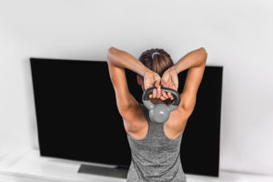

Welcome to Ejercicios efectivos de tríceps
15 ejercicios para unos tríceps y brazos más grandes
2021.06.26 19:32Buscar Entrena con MH Fitness Reto MH Live Ejercicios en casa Ejercicios de abdominales Ejercicios para b√≠ceps y tr√≠ceps Ejercicios de pecho Ejercicios de espalda Ejercicios de piernas y gl√∫teos CrossFit Strongman Boxeo Desaf√≠o Calistenia MH Desafio MH 21 d√≠as Nutrici√≥n Dieta para verano Salud Perder peso Actualidad Hombres MH Estilo Zapatillas Sexo y relaciones Tecnolog√≠a y gadgets Move On El poder de la positividad Buenas compras onnline S√≠guenos Facebook Twitter Instagram Youtube Flipboard Pinterest Pol√≠tica de cookies Aviso de privacidad Ediciones: US UK Espa√±a Nederland ENTRENA con MH Fitness Nutrici√≥n Salud Estilo S√≠guenos ES ES Lo m√°s le√≠do 1 üí™1 MES GRATIS entrenando con Men's Health 2 Toma el control de tu estilo y de tu barba Men s Health + Rowenta 3 Sa√∫l Craviotto abandera el verano de Men's Health 4 Sa√∫l Craviotto, a por el oro en CUPRA Men s Health + Cupra 5 Las 50 mejores posturas sexuales para el hombre
Men's Health participa en varios programas de afiliación de marketing, lo que significa que Men's Health recibe comisiones de las compras hechas a través de los links a sitios de los vendedores.
15 ejercicios para unos tríceps más grandes y fuertes en tu entrenamiento de brazos
Los bíceps lucen más, pero no te olvides que el tríceps es el músculo más grande de tu brazo. Ejercítalos con estos 15 ejercicios básicos para añadir a tu entrenamiento semanal.
Por Redacción Men's Health 16/06/2021 Estos son los mejores 15 ejercicios para tus tríceps, para realizar en el gimnasio o incluso en casa Flexiones diamante, fondos en paralelas, press de banca con agarre cerrado varíalos en tu entrenamiento de brazos semanal 10 consejos para unos tríceps más grandes y fuertes Cuatro ejercicios full-body que harán crecer tus tríceps Cómo hacer pecho y tríceps en un solo ejercicio Quizás no lo sepas, pero el músculo más grande de tus brazos no es el bíceps, sino el tríceps, con sus tres cabezas. Así que nunca tendrás unas extremidades grandes y fuertes si no atacas correctamente y a conciencia sus tres partes. "Suponen dos tercios de la masa –dice B. J. Gaddour, asesor de Men's Health US–. Son los tríceps los que harán que tus brazos parezcan más una escopeta que un pistola ". Además, son de excelente ayuda para realizar otros movimientos como el press de banca o las flexiones.
Pero ¿qué es lo más importante a la hora de entrenar tus tríceps, tanto en casa como en el gimnasio? Por nuestra experiencia, como hemos obtenido mayores resultados ha sido con peso libre y ejercicios como los fondos o dips, el press francés con barra Z tumbado en banco o el press de banca con agarre cerrado. Siempre hemos priorizado esos ejercicios en nuestras rutinas de brazo, y hemos dejado el trabajo en polea, también muy útil, para el final
Del trabajo con cable o en polea, tiene bastantes movimientos, pero nos gustan los ejercicios en polea alta con cuerdas y barras varias, incluso modificando los agarres, desde supino a prono o neutro. Y, como finisher, unos fondos con las manos apoyadas en un banco y los pies en otro, bajando todo lo que podamos sin forzar en exceso las articulaciones del hombro y las clavículas.
En cuanto al número de series y repeticiones, los tríceps, a diferencia de los bíceps, los puedes trabajar uno o incluso dos días a la semana, sin problemas, y como soportan gran carga de trabajo, tirar con muchos kilos, sobre todo con las poleas o el press francés con la ayuda de un compañero del gimnasio. Rangos de 10 a 15 repeticiones, de 3 a 4 series por ejercicios, y atacando el músculo desde todos los ángulos y prestando mucha atención a la fase excéntrica.
¿Entrenamos primero los bíceps o los tríceps? Pues a tu elección En nuestro caso, como priorizamos los tríceps, pues los entrenamos primero y dejamos la parte final del entrenamiento de brazos para los bíceps, donde haremos menos ejercicios y el trabajo no será con tantos kilos.
Las flexiones, uno de los ejercicios de fuerza por excelencia, también son muy útiles para mantener nuestros tríceps siempre a tono . Ya sabes que puedes hacer desde flexiones normales de pecho a las conocidas como flexiones diamante para incidir más en los brazos y menos en la parte de los pectorales.
15 ejercicios para desarrollar tus tríceps
1- Flexiones con manos juntas
Es un básico para definir tu pecho, pero cuanto más juntes las manos, más trabajarás tus tríceps. Mantén la espalda recta, aprieta los glúteos y baja hasta rozar con la barbilla el suelo.
redes2- Extensiones de pie con mancuernas
El músculo te quemará literalmente. Eso sí, no cojas demasiado peso y vigila que tu técnica sea la correcta para evitar lesiones. Espalda recta también, no se te olvide para no dañarte la zona lumbar.
redes3- Extensiones en TRX
El entrenamiento en suspensión permite trabajar con tu propio peso corporal y son excelentes para el tren superior. Inclínate ligeramente flexionando los codos y notarás cómo se tensan. No hace falta que bajes demasiado, así que una inclinación como la del vídeo es perfecta.
redes4- Extensiones con mancuerna en banco
Para desarrollar la cabeza larga del tríceps, coge la pesa por encima de tu cabeza con las dos manos y sube y baja flexionando los codos, sin bloquearlos.
This content is imported from YouTube. You may be able to find the same content in another format, or you may be able to find more information, at their web site.5- Press francés con mancuernas
Especialmente diseñado para realizar muchas repeticiones si lo deseas, es ideal para definir. Utiliza una barra Z a poder ser y controla la fase excéntrica al máximo.
redes6- Flexiones con mancuernas y codos abiertos
Otro ángulo, otro trabajo. Conocido como tate press, este movimiento sirve para coger más fuerza en todo el brazo.
This content is imported from YouTube. You may be able to find the same content in another format, or you may be able to find more information, at their web site.7- Press de banca
Coloca un rodillo de espuma en tu pecho y baja hasta que la barra toque. Sube y baja lentamente y nota la tensión en los tríceps.
redes8- Barras paralelas
Ejercicio clásico, muy utilizado en la calistenia, que sirve también para el pecho. Se aconseja no bloquear los codos y no es recomendable si padeces alguna lesión en los hombros.
redes9- Press de banca agarre cerrado
Como el ejercicio tradicional, pero con las manos más juntas y con el agarre cerrado para incidir en el trabajo de tríceps.
10- Extensiones en el suelo de press francés con deslizamiento
"Permite descansar más para que puedas hacer más repeticiones", dice Gaddour. Como el press francés, pero con barra y cuando las pesas toquen el suelo, rueda un poco la barra hacia atrás.
redes11- En el suelo con pesas rusas
Variación del press de banca clásico, esta vez usando unas pesas rusas. Sube y baja hasta que tus codos toquen el suelo, pero sin golpear para no aprovechar ese impulso
redes12- Polea para tríceps son cuerda
Otro movimiento típico, en el que no es bueno cargar mucho peso para evitar que la espalda y los hombros también actúen. Intenta no separar los codos del cuerpo y acompaña el movimiento con la respiración.
This content is imported from YouTube. You may be able to find the same content in another format, or you may be able to find more information, at their web site.13- Flexiones diamante
Colocamos las manos juntas formando un diamante con los dedos y bajamos muy lentamente para enfatizar todavía más el trabajo de los tríceps. Roza el suelo con la barbilla y mantén el core firme en todo momento para que no se te hunda la cadera.
This content is imported from YouTube. You may be able to find the same content in another format, or you may be able to find more information, at their web site.14- Fondos en casa con una silla
Colocamos los pies en alto y con las manos apoyadas en una silla, de espaldas a ella, subimos y bajamos lentamente sin separar demasiado los codos.
This content is imported from YouTube. You may be able to find the same content in another format, or you may be able to find more information, at their web site.15 - Fondos para tríceps en banco
Con el cuerpo como en el vídeo y la espalda recta, bajamos muy lentamente en cada una de las repeticiones.
Buenas compras del mes
KappaPrimeriti
Hasta -55%
Pedro del HierroCortefiel
Hasta -70%
Levi's®Cortefiel
Hasta -30%
ESPRITPrimeriti
Hasta -70%
Protectores solaresSephora
Hasta -30%
NapapijriCortefiel
Hasta -20%
Gafas de SolAsos
Hasta -65%
Zapatos Asos Asos
Hasta -60%
Contenido relacionado La mejor rutina para tus brazosThis content is created and maintained by a third party, and imported onto this page to help users provide their email addresses. You may be able to find more information about this and similar content at piano.io Publicidad - Sigue leyendo debajo M√°s de Ejercicios de brazos para b√≠ceps y tr√≠ceps El entrenamiento de pecho y brazos de Lou Ferrigno Un entrenamiento diferente de b√≠ceps-tr√≠ceps Publicidad - Sigue leyendo debajo 5 ejercicios de tr√≠ceps para unos brazos grandes Los mejores ejercicios para tus antebrazos Los 21 mejores ejercicios para tus b√≠ceps B√≠ceps m√°s grandes con estos 5 ejercicios brutales 100 kilos de curl de b√≠ceps, el r√©cord m√°s brutal Los mejores ejercicios para el b√≠ceps con bandas El ejercicio para tr√≠ceps con una toalla de Baena As√≠ entrena El Profesor para 'La casa de papel' Ejercicios de brazos para b√≠ceps y tr√≠ceps Equipaci√≥n Men's Health Fitness Cuatro ejercicios full-body que har√°n crecer tus tr√≠ceps 10 consejos para unos tr√≠ceps m√°s grandes y fuertes Operaci√≥n brazos: 15 ejercicios para tus tr√≠ceps Ejercicios de tr√≠ceps en casa para sacar brazaco 5 ejercicios de tr√≠ceps para unos brazos grandes El mejor entrenamiento de tr√≠ceps en polea Contacto Hearst Espa√±a Publicidad Suscr√≠bete Entrena con MH Fitness Nutrici√≥n Perder peso Salud Estilo Men s Health marca perteneciente al grupo Hearst Magazines International Men's Health participa en varios programas de afiliaci√≥n de marketing, lo que significa que Men's Health recibe comisiones de las compras hechas a trav√©s de los links a sitios de los vendedores. ©2021 Hearst Espa√±a S.L. Todos los derechos sobre las marcas, im√°genes y contenidos est√°n protegidos. Aviso de privacidad Pol√≠tica de cookies Aviso Legal Sitemap Ajuste de Cookies
